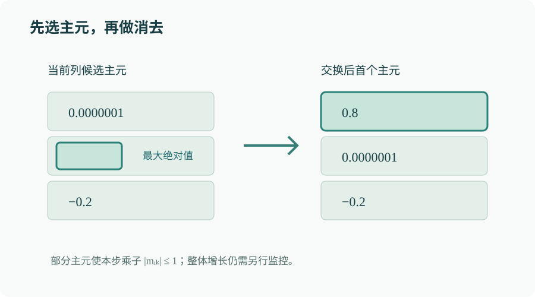
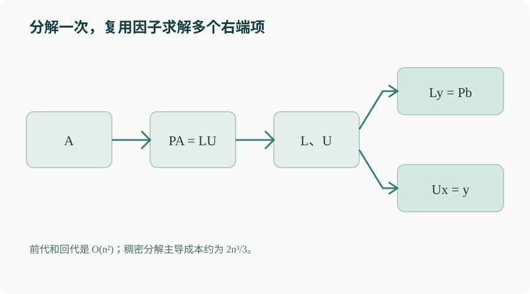
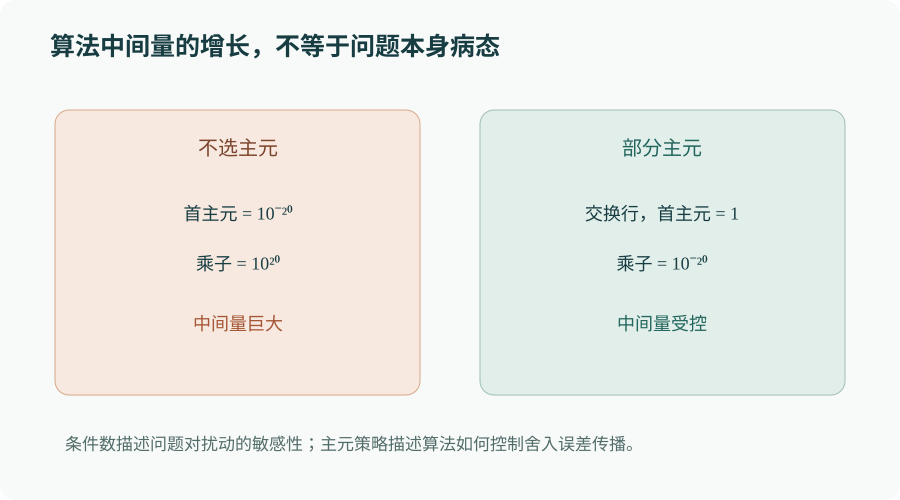

CHAPTER 15 · NUMERICAL ANALYSIS
Gauss 消去与 LU 分解：主元、稳定性和可复用因子
线性系统为什么不能随意按原始对角元消去？从部分主元、PA=LU、前代回代到残差与增长因子，建立可靠的稠密线性求解器心智模型。
01 · 一个条件良好的矩阵，也可能让不选主元的消去法崩溃
考虑矩阵 A=[[10⁻²⁰,1],[1,1]]。它的第一个主元极小；若按原始行顺序直接消去，乘子会达到 10²⁰，随后更新矩阵时会产生极大中间量和严重消去。交换两行后，第一个主元变成 1，乘子只有 10⁻²⁰。这个例子说明：矩阵问题本身的条件数与算法中间步骤的稳定性是两回事。
高斯消去的目标是通过行变换把一般线性系统变成上三角系统，再用回代求解。主元策略不改变原方程组的解，却会显著改变消去过程中的数值风险。

02 · 消去一步：乘子、秩一更新与上三角系统
在第 k 列，若主元 aₖₖ 非零，取乘子 mᵢₖ=aᵢₖ/aₖₖ，用第 k 行消去其下方元素。更新公式只作用于剩余子矩阵，因此可以理解为一个外积型的秩一更新。逐列执行后，矩阵变为上三角。
如果在某一步主元为零，算法无法直接除法；即使主元非零但非常小，乘子也可能非常大。因此实际算法会在当前列剩余行中选取绝对值最大的元素作为主元，并把对应行交换到当前位置。部分主元保证本步乘子的绝对值不超过 1，但这并不等于对所有矩阵都给出很小的整体增长因子。
03 · 部分主元：把行交换写进置换矩阵
用 P 表示所有行交换的置换矩阵，则一种常用约定是 PA=LU，其中 L 为单位下三角矩阵，U 为上三角矩阵。不同软件文档也可能写成 A=PLU，这是因为它们对置换矩阵或逆置换的定义方向不同；阅读接口时必须确认约定，而不是只看字母顺序。
在第 k 步，部分主元选择 r=argmax_{i≥k}|aᵢₖ⁽ᵏ⁾|，交换第 k 行与第 r 行。LAPACK 的 DGETRF 通过部分主元和行交换完成一般矩阵的 LU 分解；它把置换信息存入 pivot index 数组，并明确报告精确零主元。

04 · Doolittle、Crout 与多右端项：分解一次，求解多次
Doolittle 约定把 L 的对角线设为 1；Crout 约定把 U 的对角线设为 1。二者只是因子归一化的不同，不是两种不同的消去原理。若已经得到 PA=LU，求解 Ax=b 时先解 Ly=Pb，再解 Ux=y。
当矩阵固定而右端项变化时，分解只做一次，之后每个右端项只需两次三角求解。稠密矩阵 LU 分解的主导计算量约为 2n³/3 次浮点运算；每个右端项的前代和回代为 O(n²)。这也是为什么不应显式计算 A⁻¹ 再乘 b：直接求解通常更便宜，也更稳定。
残差小并不自动意味着前向误差小：若 A 病态，一个很小的残差也可能对应较大的解误差。要判断解是否可信，应把残差、条件数估计、尺度和后向误差一起考虑。
05 · 稳定性审计：主元、增长因子、条件数与残差
部分主元选择当前列绝对值最大的元素，使每个消去乘子满足 |mᵢₖ|≤1。这避免了最直接的小主元灾难，但消去过程中的元素仍可能增长；部分主元的最坏情形增长因子上界随矩阵阶数指数增长，尽管实际常见问题中增长往往温和。不能把“通常稳定”误写成“任何输入都稳定”。

向后稳定的算法意味着计算结果可看作某个轻微扰动问题的精确解；前向误差则还受到问题条件数影响。Higham 的数值算法稳定性理论强调，算法稳定性与问题条件数必须分别分析。对高精度需求，可以在 LU 求解后计算残差并做迭代改进；若矩阵尺度差异很大，还应考虑行列平衡和更合适的矩阵结构分解。
对于稀疏矩阵，直接把稠密 LU 的 O(n³) 算法套用到大规模离散 PDE 或有限元系统是不合理的：稀疏直接法还要考虑 fill-in 和重排序，或根据矩阵性质采用预条件迭代法。对称正定系统可考虑 Cholesky；大规模稀疏系统常考虑 CG/GMRES 等方法。选择算法前先识别矩阵结构。
06 · 可复现实现：带部分主元的 LU 因子分解
def lu_factor_pp(A):
n = len(A)
U = [list(map(float, row)) for row in A]
L = [[0.0]*n for _ in range(n)]
P = [[float(i == j) for j in range(n)] for i in range(n)]
for i in range(n):
L[i][i] = 1.0
for k in range(n):
pivot = max(range(k, n), key=lambda i: abs(U[i][k]))
if U[pivot][k] == 0.0:
raise ValueError("singular matrix")
if pivot != k:
U[k], U[pivot] = U[pivot], U[k]
P[k], P[pivot] = P[pivot], P[k]
for j in range(k):
L[k][j], L[pivot][j] = L[pivot][j], L[k][j]
for i in range(k+1, n):
m = U[i][k] / U[k][k]
L[i][k] = m
for j in range(k, n):
U[i][j] -= m * U[k][j]
U[i][k] = 0.0
return P, L, U
A = [[1e-20, 1.0], [1.0, 1.0]]
P, L, U = lu_factor_pp(A)
def matmul(A, B):
return [[sum(A[i][k]*B[k][j] for k in range(len(B)))
for j in range(len(B[0]))] for i in range(len(A))]
PA, LU = matmul(P, A), matmul(L, U)
assert max(abs(PA[i][j]-LU[i][j]) for i in range(2) for j in range(2)) < 1e-12
assert max(abs(v) for row in L for v in row) <= 1.0
assert abs(L[1][0]) < 1e-18
print("P =", P, "L =", L, "U =", U)代码是用于展示分解关系和主元策略的教学实现，未包含工业级 LAPACK 中的块算法、缓存优化、并行 BLAS、异常状态和完整的尺度/溢出诊断。实际求解应调用成熟线性代数库，并在调用后检查状态码、残差和必要的条件数估计。
原始资料与延伸阅读
数学结构与算法细节以 NIST DLMF、原始论文和 LAPACK 文档交叉核对；所有图解和实验均为独立构造。
- LAPACK · DGETRF：带部分主元和行交换的 LU 分解。
- LAPACK · DGESV：使用部分主元 LU 分解求解实线性方程组。
- Nicholas J. Higham · Accuracy and Stability of Numerical Algorithms：高斯消去、主元策略、舍入误差与向后稳定性。